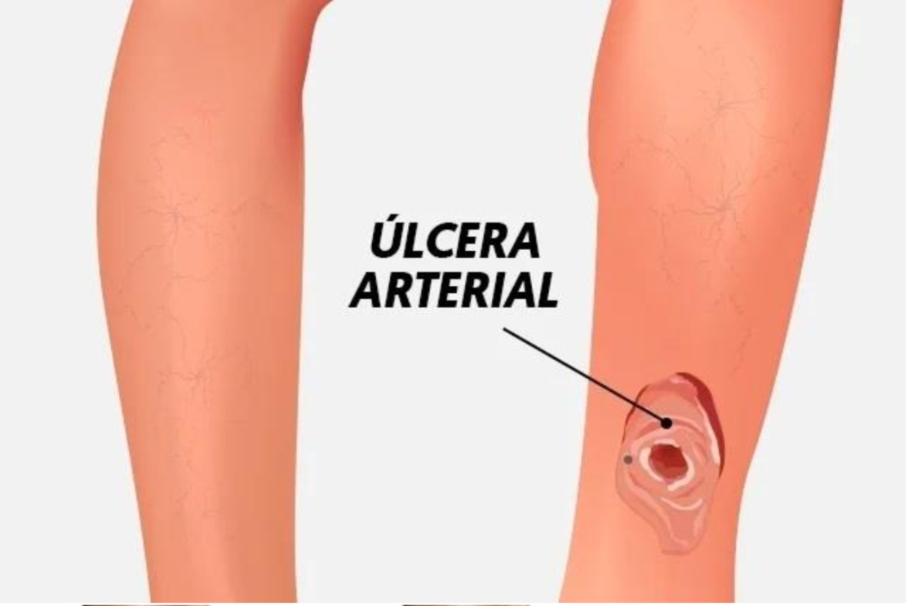
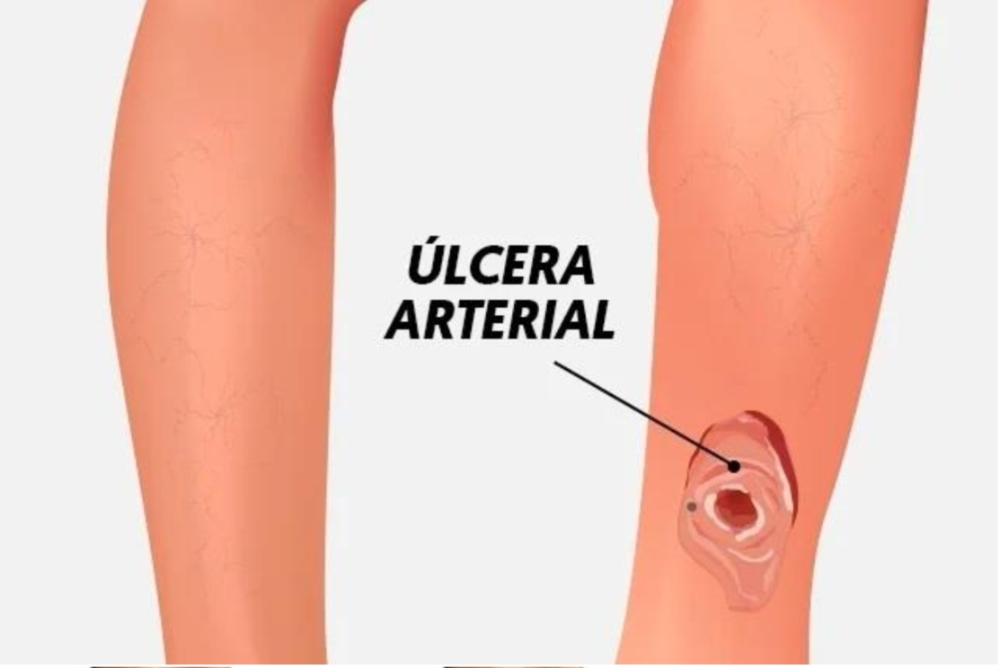

Lesão Arterial
O que é?
A úlcera arterial é um tipo de ferida que surge na pele e que não melhora com o tempo, podendo até aumentar de tamanho ou ficar infectada. Este tipo de úlcera é comum devido à diminuição da circulação de sangue no local, o que faz com que o tecido não consiga cicatrizar, sendo mais comum nas pernas e pés.
Características da úlcera arterial:
-
Ferida redonda que vai aumentando de tamanho;
-
Ferida profunda que não sangra;
-
Pele fria e seca em redor da ferida;
-
Dor intensa na ferida, especialmente ao fazer exercício.
Sintomas:
-
Dor no membro afetado;
-
Atrofia cutânea;
-
Alopecia;
-
Pele fria e cianótica e unhas distróficas;
Público alvo:
-
Pacientes idosos;
-
Raramente é encontrado em paciente jovens, apenas naqueles que possuem diabetes Mellitus descontrolada;
-
No sexo feminino pode acontecer após a menopausa.
Formas de tratamento:
-
Remover o curativo anterior;
-
Lavar a ferida com soro fisiológico;
-
Aplicar um tipo especial de penso;
-
Aplicar o curativo externo;
-
Passar um creme ou pomada hidratante;
 
